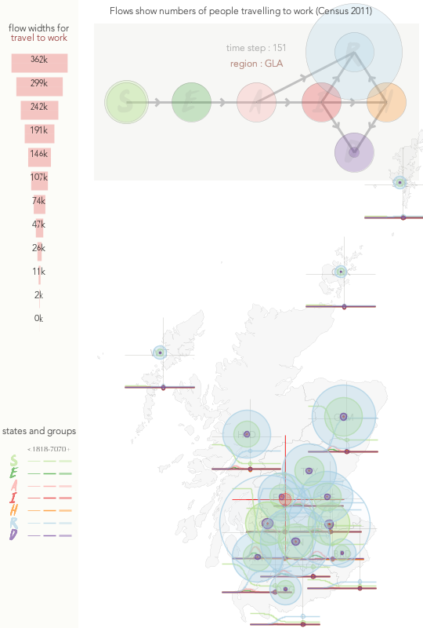

1. The Visualization Approach
We aim to show patterns & relationships in detail through data rich graphics that are designed to be interpretable and informative.
We draw on centuries of knowledge developed in cartography, design, cognitive psychology and computer science to develop approaches that suit particular :
questions, people, data types, data sets, settings
- Show many things concurrently - no grouping
- Reveal the unseen - effective, creative visual design
- Provide control over what is seen when as needs, data sets and knowledge change and develop - effective, creative interaction design
We draw upon principles & algorithms developed in our discipline to make the complex interpretable
(we have good solutions that we can adopt and adapt)
2. How It Works
Medium Term VIS
Normally, software engineering with engaged co-design ...
- requirements, discussion, exploration -> iteratively developed system
- we build for you, you operate
Rapid VIS
Now, we have volunteer capacity but little time in the COVID emergency, so ...
- you express a problem / question
log this on 'VIS Help' channel
we allocate whoever has skills, knowledge & capacity - we provide visual answers in 24 hours (or so)
- then iterate, close or start again
We are your rapid VIS analysis & design task force!
3. A Visualization Example :
simple_network_sim output
Q - How do the numbers of people in each health state vary geographically over time?
D - 58,800 numbers
- 200 time steps
- 14 NHS Boards (regions)
- 7 health states
- 3 age groups
K - important to know that ...
- geographic units vary in size
- numbers in outputs (by state) vary by orders of magnitude
- states are related in a network
- no explicit (quantified) uncertainty
V - visualization to see or compare any useful subset(s) of these numbers :
Use algorithms, design patterns and knowledge of perception & cognition to develop plausible & effective graphics that ...
- compare places
- compare times
- compare age groups
- compare states
- compare states for age group
- compare states for age group over time
- etc.
| Design Ideas | ||
|---|---|---|
|  |  |
 |
I - interact to get what you need
Rapid, intuitive, consistent real time interactions to navigate through all (possible, useful) views of the data to ...
- get specifics
- change encoding - layout, emphasis, scaling
- change selection - filter
- change speed
- annotate / record
| Interactive Design Prototype |
|---|
 |
A - So what do we know?
There are no clear spatial patterns in what are extremely regular temporal patterns in the sample outputs.
The visualization gives us a sense of the complexity and variation that we can expect, and the kinds of functionality we might use to begin to explore and understand it.
As model outputs develop, it's likely that this kind of interactive spatio-temporal visualization will help us understand them.
More Details
More details and more graphics relating to this example are available .
Jason DYKES
20/07/06